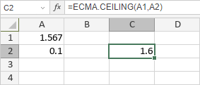

ECMA.CEILING funkcija
ECMA.CEILING funkcija je jedna od matematičkih i trigonometrijskih funkcija. Koristi se za zaokruživanje broja nagore na najbliži višekratnik značajnosti. Negativni brojevi se zaokružuju ka nuli.
Sintaksa
ECMA.CEILING(x, significance)
ECMA.CEILING funkcija ima sledeće argumente:
| Argument | Opis |
|---|---|
| x | Broj koji želite da zaokružite nagore. |
| significance | Višekratnik značajnosti na koji želite da zaokružite nagore. |
Napomene
Kako primeniti ECMA.CEILING funkciju.
Primeri
Slika ispod prikazuje rezultat koji vraća ECMA.CEILING funkcija.
